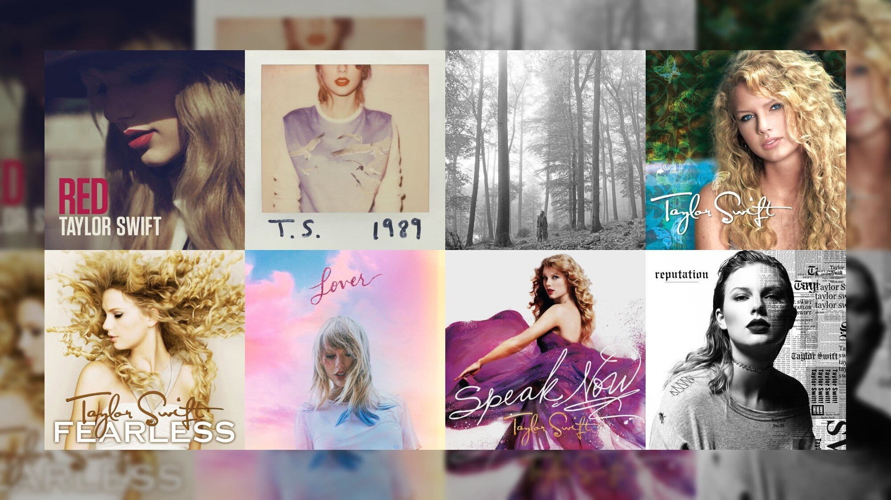

Taylor Swift é uma cantora e compositora americana. Conhecida por suas músicas narrativas sobre sua vida pessoal, ela recebeu elogios críticos e ampla cobertura da mídia.
Taylor Swift lançou muitos álbuns, cada um mostrando sua evolução musical. Alguns de seus álbuns mais notáveis incluem "Fearless", "1989" e "Lover".
